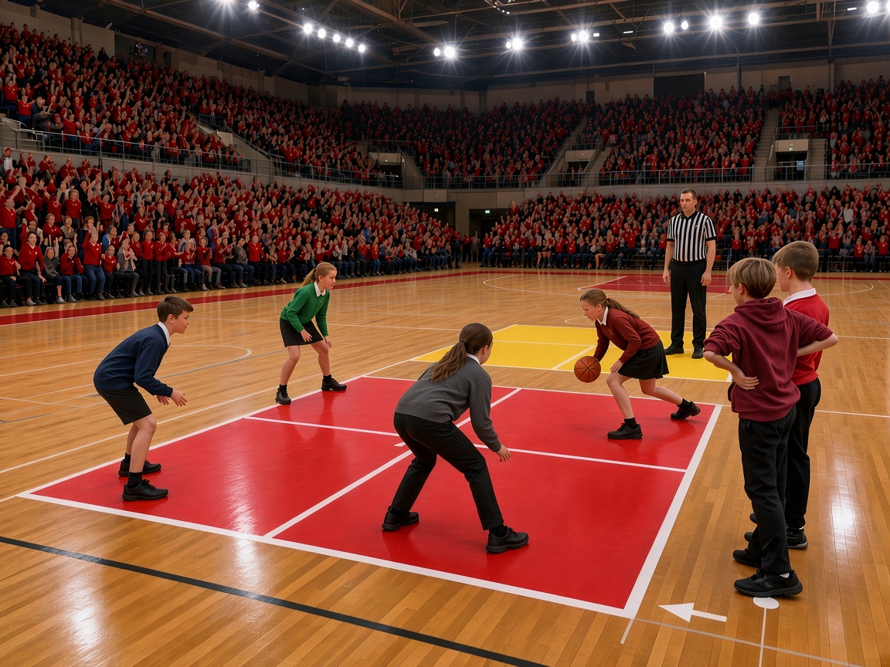

What Is Four Square?
Four Square is a classic playground ball game played by four players on a court divided into four equal squares. Popular in schools, camps, and neighborhoods around the world, the four square game is easy to learn, fast-paced, and competitive. Players use their hands to hit a ball between squares with the goal of eliminating opponents and advancing to the highest-ranked square.
If you’re looking for official rules, competitive standards, or World Championship gameplay, you’ll want to visit our Rules of Four Square page, which goes into full detail.

Four Square Game Basics
How Many Players Do You Need to Play Four Square?
Four Square is played with four players on the court at a time. Additional players can line up and rotate in when someone is eliminated.
This rotating structure makes Four Square ideal for playgrounds, gym classes, and group play, allowing many participants to stay involved without long wait times.
Why Is Four Square So Popular?
Four Square remains popular because it is easy to learn, requires minimal equipment, and can be played casually or competitively. Oh, and it's super fun!
The game remains a schoolyard favorite, but has also evolved into an organized competition, including the annual Four Square World Championship™.
Players who want a deeper understanding of gameplay and official standards should visit the official Four Square Rules page.
How Four Square Teaches Sportsmanship
In addition to being fun and a great method of exercise, Four Square helps kids develop important social and sportsmanship skills. Because the game relies on honesty, fair play, and quick rotation, players learn to follow rules, respect others, and handle both winning and losing gracefully.
Disputes are often resolved on the court through discussion or a monitor/official/referee, encouraging communication, patience, and mutual respect. These qualities make Four Square a favorite among teachers, parents, camps and playground supervisors.
Frequently Asked Questions About Four Square
Is Four Square a real sport?
Yes. While Four Square began as a playground game, it has evolved into a competitive sport with organized standards, official rules, and an annual Four Square World Championship.
What ball is used in Four Square?
Four Square is typically played with an 8.5 inch rubber playground ball inflated to 2 lbs. However, ball size, inflation, and material can vary depending on whether the game is being played casually or under competitive standards.
For official specifications and gameplay guidelines, visit our Rules of Four Square page. We also explore equipment, strategy, and variations in more depth on our blog.
Can I submit a question about Four Square?
Absolutely. If you have a question about how to play Four Square, equipment, rules, or competitive play, we encourage you to submit it. Select questions will be answered and featured in future blog posts and updates to this guide.